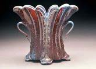
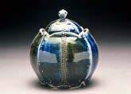
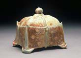
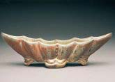
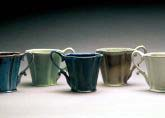
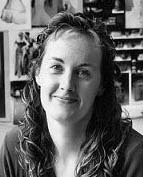

American
studio potter Kristen
Kieffer makes wheel-thrown, altered and soda-fired sculptural
vessels inspired by Elizabethan to couture clothing, 18th century
American silver and Islamic patterning and metal-working. She uses
slip-trailing, stamping and sprigging to give surface textures to
her Flower
Vessels, Service
Pieces, Lidded
Forms and Cups
and Bowls. While functional, the surfaces and forms of her
pottery connote intimacy, sensuousness and an air of bygone sophistication.
Kristen earned an Associate Art Degree in Studio Arts
at Montgomery College, Rockville, MD in 1993, a BFA in Ceramics
at the NYSCC at Alfred University in 1995 and an MFA in Ceramics
at Ohio University in 2001. She was a pottery intern with Greenfield
Village at the Henry Ford Museum, Dearborn, MI in 1995-96 and has
been an artist-in-residence at the Arrowmont School of Arts &
Crafts, Gatlinburg, TN (1997-98), the Worcester Center for Crafts,
Worcester, MA (2001-03) and Guldagergård at the Museum of
International Ceramic Art, Skælskør, Denmark (2003).


She was John Glick’s studio assistant from 1996-97
and assisted Brad Schwieger at the Penland School for Crafts for
a summer session in 2001. Since 2001, she has been a Ceramics Instructor
at the Worcester Center for Crafts and a workshop instructor at
craft centers and universities around the country.

Artist's Statement
"I
am curious about our culture's conceptions of the “everyday
object” and find myself wanting to playfully challenge those
notions within the parameters of pottery. While my work aligns itself
with the detail, sophistication and beauty of a bygone era, my desire
is to evoke an air of 21st century, daily extravagance. I question
the seeming incompatibility that seems to exist in our current consciousness
between function and adornment, and challenge myself to make the
connection.
My latest curiosity in the reciprocation between function
and decoration is based in the idea of beauty, a banal subject until
teased open and questioned. The intrigue of unending layers comprising
beauty (layers I wish for my own work) has led my influence of clothing
toward the suggestive. Clothing and fabric& - Elizabethan to contemporary
evening wear - with their contours and patterns have long been underlying
allusions for my work. My latest forms reveal my forays into more
intimate layers of beauty& - the sensuousness underneath.
Form, function and ornamentation are of equal importance
to me as a potter. My hope is that the forms will invite closer
inspection revealing the surfaces, which in turn entice the viewer
to want to hold and use them".
More Artists of the
Week
More Articles

{kind=link}
{kind=link}
{kind=link}
{kind=link}
{kind=link}